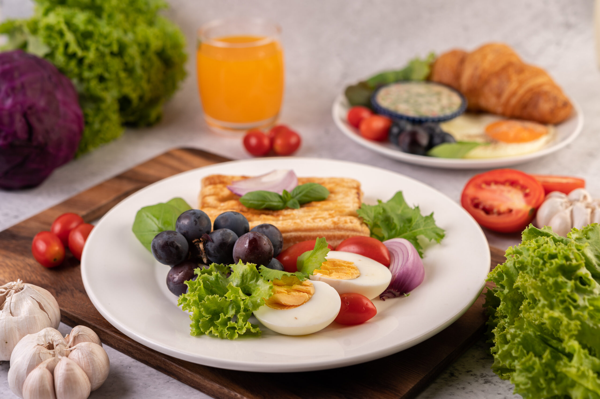
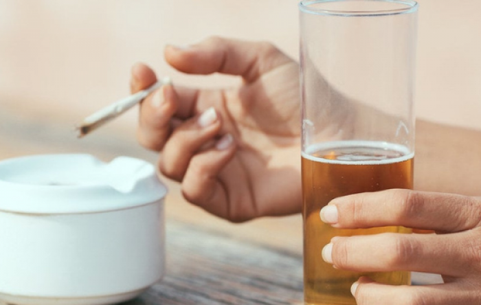

Artikel Kesehatan Terkini
Indonesia Berhasil Mengendalikan COVID-19
Indonesia telah menghapus semua langkah pengendalian penyebaran COVID-19 secara efektif, karena sebagian besar penduduk negara ini sudah memiliki antibodi terhadap penyakit ini. Presiden Joko Widodo mencatat bahwa kasus harian telah turun di bawah 1.000 dalam sebagian besar hari dalam seminggu terakhir.
Vaksinasi Massal di Pulau Jawa
Pemerintah Indonesia telah meluncurkan program vaksinasi massal di Pulau Jawa. Ribuan warga telah divaksin dan tingkat kekebalan kelompok semakin meningkat.
Peran Masyarakat dalam Pencegahan COVID-19
Selain vaksinasi, peran aktif masyarakat juga penting dalam pencegahan COVID-19. Memakai masker, menjaga jarak, dan mencuci tangan adalah langkah-langkah yang harus terus diterapkan.
Kesehatan Mental di Masa Pandemi
Pandemi juga berdampak pada kesehatan mental. Begini cara menjaga kesehatan mental selama masa pandemi dan pentingnya dukungan sosial.
Tips Gaya Hidup Sehat
- Perhatikan berat badan Anda agar tetap dalam rentang sehat. Ini dapat melindungi Anda dari tekanan darah tinggi, kolesterol tinggi, penyakit jantung, stroke, dan diabetes tipe 2.
-  Konsumsi makanan bergizi seperti buah-buahan, sayuran, biji-bijian utuh, protein rendah lemak, dan produk susu rendah lemak.
-
 Minum cukup air dan tetap terhidrasi.
Memenuhi kecukupan cairan tubuh dengan minum air
tak hanya dapat menghidrasi tubuh, tapi juga menormalkan
tekanan darah.
Minum cukup air dan tetap terhidrasi.
Memenuhi kecukupan cairan tubuh dengan minum air
tak hanya dapat menghidrasi tubuh, tapi juga menormalkan
tekanan darah.
- Lakukan olahraga secara teratur. Olahraga dan aktivitas fisik merupakan cara yang sangat baik supaya Anda merasa lebih baik, mendapat manfaat kesehatan dan bersenang-senang.
- Kurangi waktu duduk dan paparan layar. Terlalu lama didepan layar dapat menyebabkan kesehatan terganggu.
- Manfaatkan waktu di luar ruangan. Menghabiskan banyak waktu di luar ruangan untuk beraktivitas berkorelasi positif terhadap suasana hati yang lebih baik, kualitas tidur yang lebih baik, dan risiko depresi seumur hidup yang lebih rendah.
-  Hindari konsumsi alkohol dan merokok. Baik merokok maupun mengonsumsi alkohol dapat memberikan dampak negatif jangka panjang pada kesehatan, seperti meningkatkan risiko penyakit jantung, kanker, dan masalah kesehatan mental.